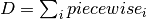
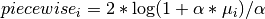

statsmodels.genmod.families.family.NegativeBinomial.deviance¶
-
NegativeBinomial.deviance(endog, mu, freq_weights=1.0, scale=1.0)[source]¶ Returns the value of the deviance function.
Parameters: endog : array-like
Endogenous response variable
mu : array-like
Fitted mean response variable
freq_weights : array-like
1d array of frequency weights. The default is 1.
scale : float, optional
An optional scale argument. The default is 1.
Returns: deviance : float
Deviance function as defined below
Notes
 where
 is defined as:
is defined as:If
 :
:
If
 :
: